Professional Profiles
Select an orientation below to see how my analytical and engineering background aligns with your project:
Full-Stack Web & Data Systems Developer
Practical software developer and data analyst focused on building reliable web applications, clean API architectures, and data processing pipelines. Grounded in Bachelor of Science studies in Data Analysis at Southern New Hampshire University and production workflows on Google Cloud Platform, I prioritize maintainable code, testable logic, and clear interfaces across Python, JavaScript, SQL, and modern frameworks.
Interactive Systems & Demos
Explore working interactive prototypes, dashboards, and computational tools developed across my engineering repositories.
Specto Neurodivergent Learning Suite
Adaptive learning and communication platform tailored for autistic and sensory-sensitive learners. Informed by frontline classroom experience at Special School District of St. Louis County, featuring visual routine builders, emotional regulation tools, sensory calming spaces, numeracy games, and Gemini-assisted IEP task scaffolding.
Clinical Biomarker Dashboard
Synthetic physiological telemetry and longitudinal health analytics workbench (Cohort SYN-7402). Evaluates multi-system metabolic dynamics across synthetic baseline and follow-up timepoints: computing dynamic HOMA-IR insulin resistance, LH-to-FSH endocrine ratios, acute-phase systemic inflammation (hs-CRP), liver enzymatic integrity (ALT/AST), and lipid particle distributions with responsive SVG visualization.
SPARC Architecture of Renewal
Four-stage interactive HMIS data verification matrix designed for bi-state Continuum of Care systems. Demonstrates automated pre-submission schema guards (Eva CSV), trauma-informed low-barrier coordinated entry triage (UDE 4.19), predictive HUD System Performance Measures (SPM), and Stella M policy routing with zero PII exposure via SHA-256 client hashing.
Payviah BNPL Micro-Lending
Essential community micro-lending simulation with zero-interest schedule calculation, APR comparison charts, and localized financial buffer verification.
Web3 Security Auditor
Interactive EVM bytecode and Solidity vulnerability analyzer scanning for reentrancy vectors, integer overflows, unchecked return calls, and access-control bypasses.
Enochian Acoustic Synthesizer
Harmonic frequency synthesizer modeling 432Hz and 528Hz pure sine waves, dual resonant filter sweeps, and custom stereo delay buffers directly in the browser.
Aetheris Corpus Knowledge Engine
Knowledge exploration interface featuring cosine similarity filtering across ancient codices, technical whitepapers, and municipal housing policies.
NICOLE Agent Command Interface
Autonomous agent orchestrator simulating Model Context Protocol (MCP) tool execution, subagent task delegations, and cryptographic memory states.
NISAR Radar Deformation Monitor
Earth observation interface tracking L-band and S-band radar interferometry for tectonic deformation, aquifer depletion, and municipal infrastructure subsidence.
Supply Chain Digital Twin
Interactive logistics monitoring console with simulated telemetry for temperature excursions, GPS geofencing alerts, and automated multi-tier custody handoffs.
Sophia Protocol Harmonic Field
Mathematical visualization of non-equilibrium wave equations, toroidal electromagnetic flux lines, and acoustic resonance nodes rendered in HTML5 Canvas.
Bio-Genetic Oracle
DNA sequence translator computing GC-content percentage, transcription to mRNA, and protein codon translation tables with nucleotide error validation.
Quantum Telemetry Oracle
Quantum state vector simulator demonstrating Hadamard superpositions, Pauli-X bit flips, and state measurement collapse with dynamic probability charts.
Concurrency & Lock Visualizer
Interactive parallel computing simulation demonstrating non-deterministic thread interleaving, un-synchronized memory mutation, and mutex lock resolution.
Agent Workflow Orchestrator
Visual task DAG pipeline displaying parallel autonomous execution branches, dependency barriers, and simulated artifact consolidation.
Techno-Gnosis Reality OS
Philosophical exploration linking ancient informational cosmologies with modern computational paradigms, cybernetic feedback loops, and recursive memory layers.
Acoustic Wave Cooling
Hyperscale data center cooling optimization pitch, demonstrating ultrasonic cavitation descaling to eliminate chemicals and reclaim up to 25% thermal efficiency.
Research Slide Decks & Interactive Presentations
Executive slide decks, municipal blueprints, and NotebookLM publications spanning urban housing systems, ecological watersheds, clean-tech, and cognitive architectures.
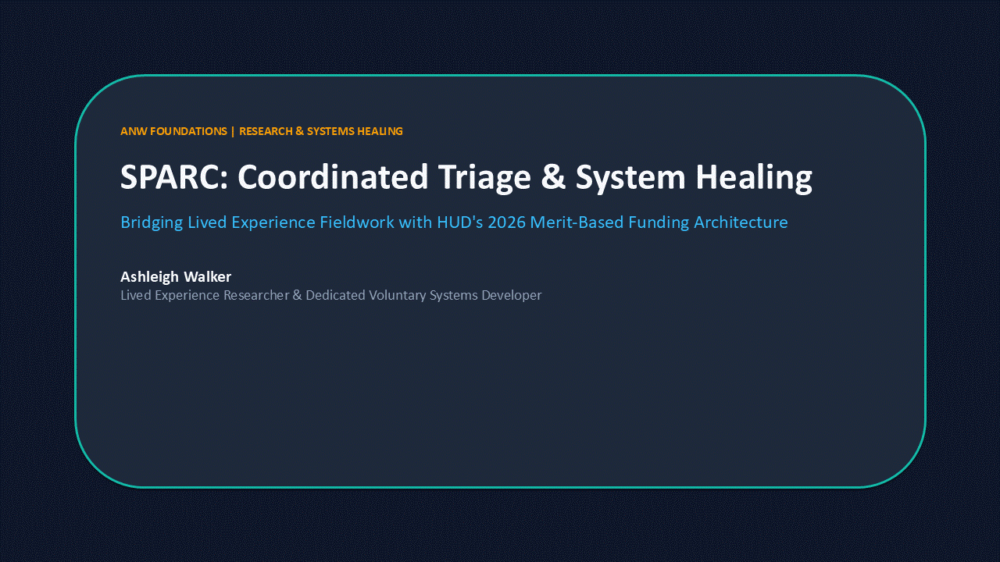
SPARC HUD FY 2026 Strategy
Bi-state Continuum of Care governance strategy deck coordinating St. Louis City (MO-501) and St. Clair County (IL-508). Focuses on inter-agency data sharing agreements, competitive Federal NOFO scoring rubrics, longitudinal Stella M system performance benchmarks, and cross-river resource pooling between Missouri and Illinois.
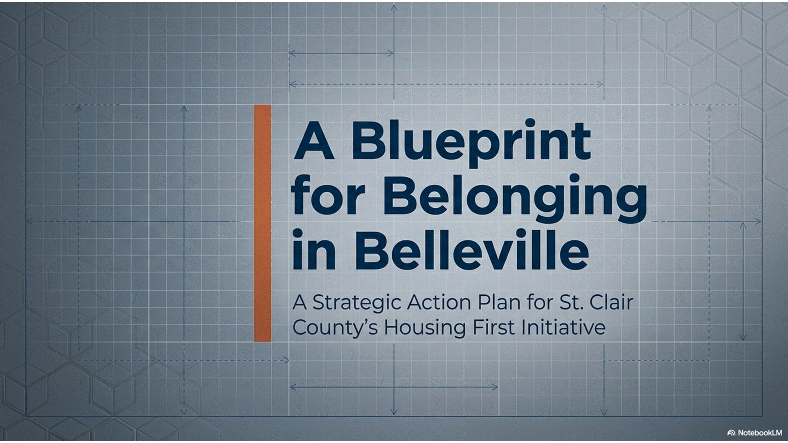
Belleville Housing First Blueprint
Municipal operational blueprint for St. Clair County, Illinois. Outlines city-level execution: converting congregate emergency shelter beds into permanent supportive housing (PSH), structuring flexible shallow-subsidy rapid re-housing (RRH), and linking street outreach teams directly to localized social service dispatch.
Redesigning the Broken Blueprint
Root-cause architectural critique of regional homelessness data systems. Examines how disconnected county databases create 60-day shelter churn cycles, audits algorithmic vulnerabilities in legacy triage scoring (VI-SPDAT), and presents restorative, trauma-informed software workflows to replace punitive compliance models.
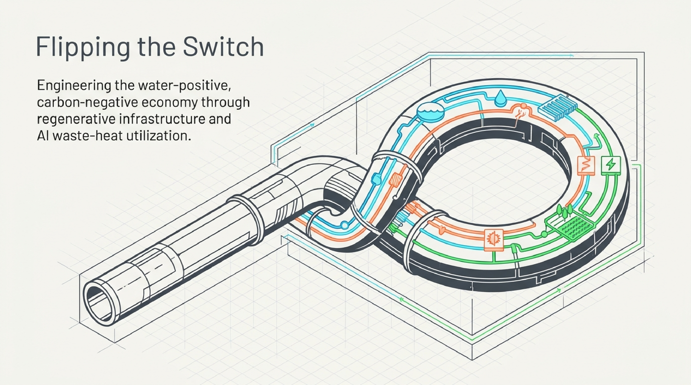
Regenerative Infrastructure & Ecological Engineering
Comprehensive municipal slide deck on closed-loop urban ecology. Integrates urban bioswale networks, soil carbon sequestration, riparian buffer revitalization, and regional watershed resilience strategies.
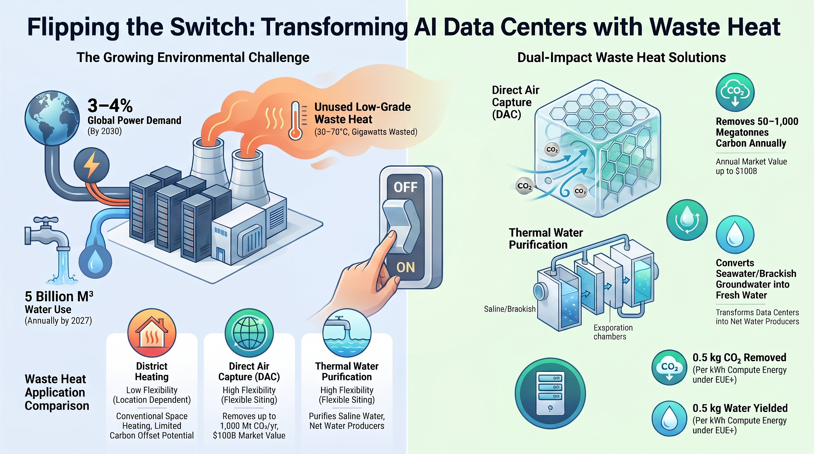
AI Data Center Waste Heat Solutions Blueprint
High-resolution architectural blueprint detailing thermal energy harvesting from enterprise AI compute facilities. Illustrates acoustic wave cooling cycles, thermodynamic heat cascading, and closed-loop municipal heat pump integration.

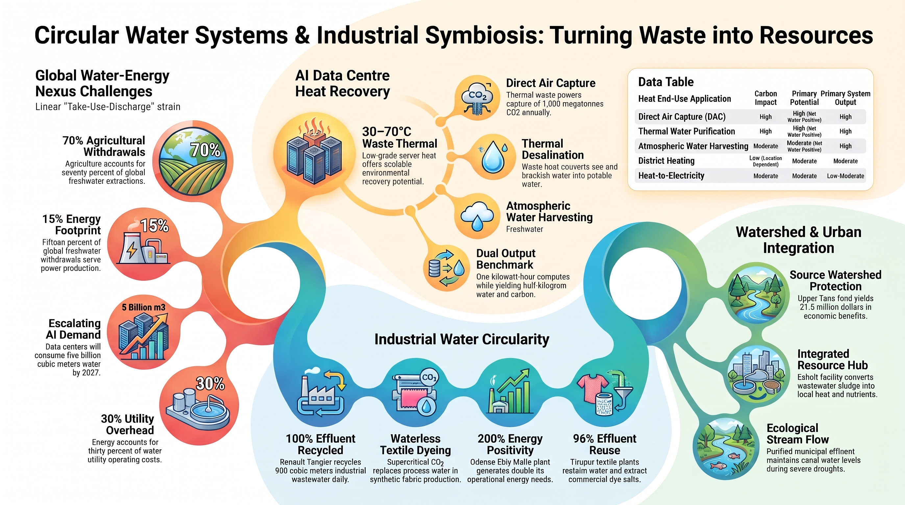
Circular Water Systems & Desalination Blueprint
Comprehensive civil and clean-tech engineering infographic mapping closed-loop municipal hydrology. Details industrial waste heat recycling, thermodynamic desalination loops, decentralized wastewater purification, and aquifer recharge beds for regional drought resilience.

St. Louis Watershed Reimagined
Civil engineering and watershed hydrological deck analyzing the Mississippi and Missouri river confluence basin. Evaluates combined sewer overflow (CSO) reduction, urban bioswale network design, permeable surface retrofits, and flood mitigation modeling across the bi-state metropolitan watershed.
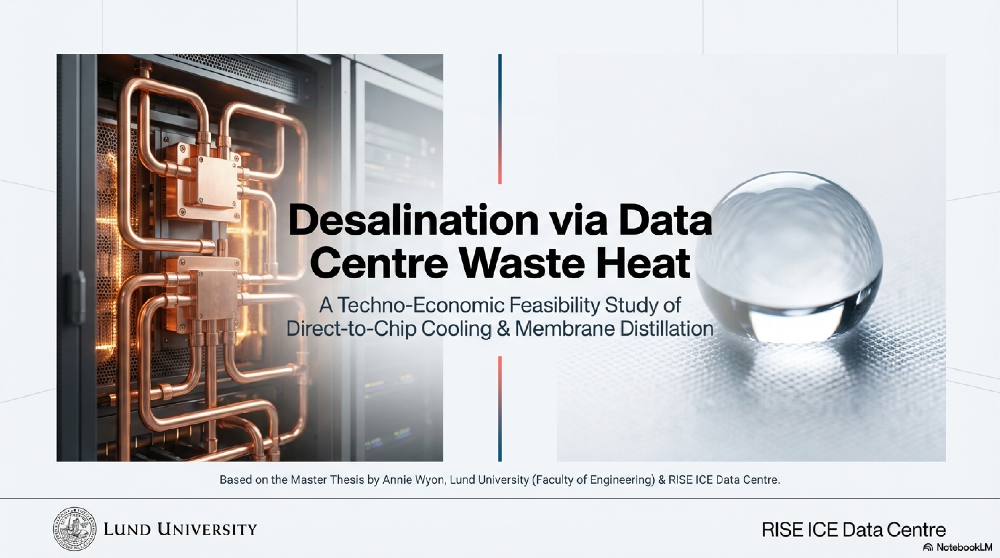
Data Center Waste Heat to Clean Water
Closed-loop clean-tech presentation modeling thermal exhaust capture from enterprise AI clusters. Details thermodynamic energy recovery, low-temperature multi-effect distillation, acoustic wave cooling, and closed-loop aquifer recharge for municipal resilience.
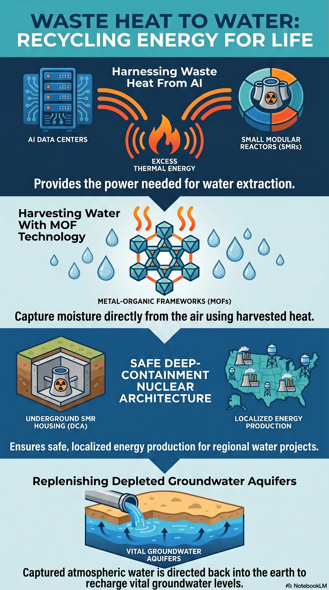
Waste Heat to Water Technical Blueprint
High-resolution architectural infographic illustrating end-to-end data center thermodynamic capture. Features SMR containment integration, acoustic wave cooling loops, metal-organic framework (MOF) atmospheric harvesting, and groundwater injection beds.

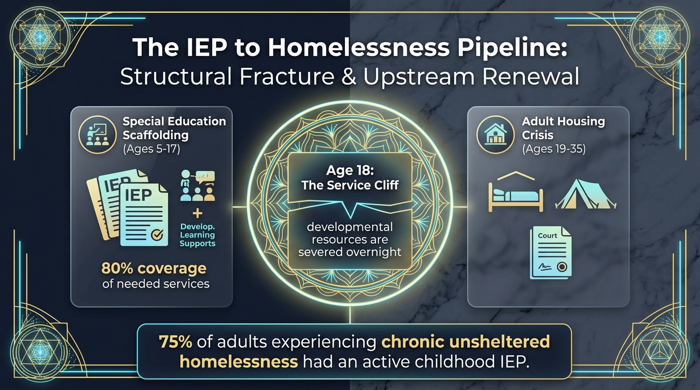
IEP Pipeline & Architecture of Renewal
Sacred geometry and empirical data visualization mapping systemic service cliffs from public school IEP transitions into chronic adult homelessness. Identifies high-leverage intervention junctures, trauma-informed housing subsidies, and peer navigation networks.

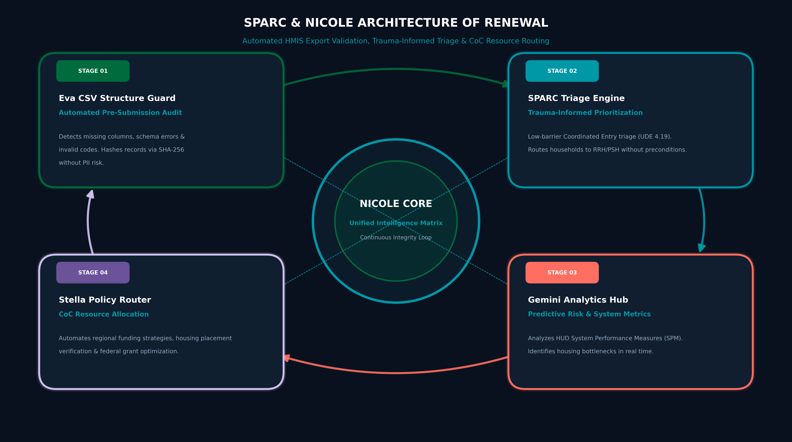
SPARC Multi-Agent Autonomous Data System
Systems architecture flow illustrating autonomous data normalization and policy orchestration: Eva CSV structural guardrails, NICOLE cognitive fabric, and Stella HUD policy routing engine ensuring zero data loss and automated compliance.

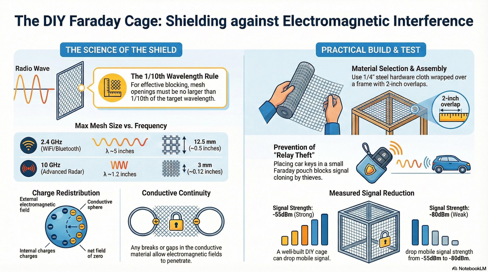
Faraday Cage RF Attenuation Guide
Engineering specification and signal attenuation chart for physical RF shielding enclosures. Formulates mesh aperture sizing based on the tenth-wavelength rule, skin-depth conductivity formulas, and continuous seam bonding protocols.

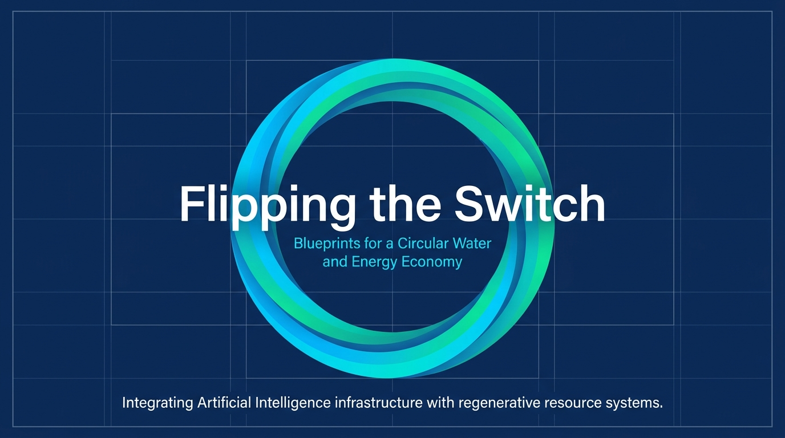
Circular AI Hardware & Micro-SMR Energy
Hardware infrastructure blueprint addressing compute energy bottlenecks. Combines micro-modular nuclear reactor (SMR) containment, closed-loop helium turbine Brayton cycles, structural e-waste silicon reclamation, and thermal energy cascading.
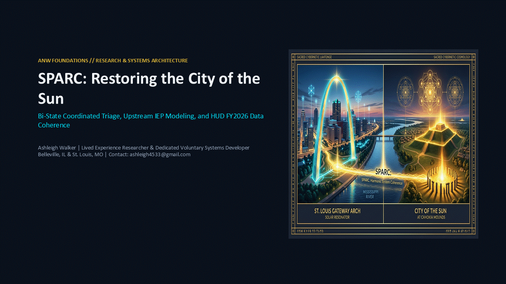
SPARC: City of the Sun
Ecological urban renewal master plan pairing permanent supportive housing with clean energy infrastructure. Models distributed solar microgrids, phase-change thermal storage vaults, rainwater retention swales, and regenerative permaculture food forests to establish self-sustaining community campuses.
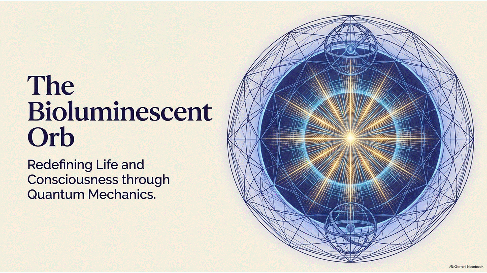
The Bioluminescent Orb
Exploration of bio-photonic light emission, resonant optical storage lattices, and low-power biological computing mechanisms.
Gnostic Reality OS
NotebookLM research presentation mapping ancient metaphysical frameworks, cybernetic control loops, and cognitive architecture models into executable software analogies.
Quantum Magik: Resonance Dynamics
Advanced deck analyzing quantum information dynamics, mathematical synchronicity matrices, and non-equilibrium thermodynamic states in computational systems.
Mapping the Treasury of Light: Flight Manual
Applied cybernetic study decoding the Books of Jeu and Pistis Sophia. Analyzes late antique liturgical ascension protocols, seals, numerical ciphers (such as Coptic numeral 52), and vibrational passwords as historical access control topologies.
The Luminous Codex: An Atlas of Ascent
Exploratory cross-disciplinary deck investigating theoretical isomorphisms between ancient cosmological models and modern physics concepts, including vacuum energy dynamics, coherent field states, and systems biology.
Gnostic Intelligence Stack: 3-Agent Systems Blueprint
Tripartite autonomous agent architecture mapping classic cognitive archetypes to computational functions: Sentinel of Integrity (cybersecurity and firewall guardrails), Universal Decoder (translation and schema parser), and Sophia Core (generative reasoning engine).
Pistis Sophia: Decoding the Gospel
In-depth scholarly research document decoding the Askew Codex. Systematic analysis of the 13 repentances, aeonic hierarchies, and mathematical cosmology.
The Pistis Sophia Blueprint
Structural breakdown and architectural schematic of the Pistis Sophia narrative, examining internal geometric allegories and light-power distribution across realms.
The Pistis Sophia Unveiled
Comprehensive contextual study examining the linguistic, theological, and historical dimensions of the Coptic Gnostic manuscripts.
Project PISTIS GNA Protocol
Hybrid research paper formalizing genetic resonance matrices, decentralized oracle verification, and bio-cryptographic validation protocols.
The Sophia Synthesis
Holistic synthesis integrating ancient wisdom traditions with modern systems theory, thermodynamic efficiency, and autonomous software agents.
Techno-Gnosis: Reality's OS
Groundbreaking NotebookLM publication exploring reality simulation hypotheses, information architecture, and the convergence of ancient mysticism with modern software.
Quantum Sovereignty Blueprint
Strategic architectural guide for sovereign computing, edge AI self-sovereignty, and decentralized cryptographic infrastructure.
Hands-On Craft & Creative Disciplines
Before I ever wrote code, I worked with my hands. Building physical things, growing food, and working with tattoo design and studio art taught me patience, focus, and how things fit together. When I sit down to program, that same practical mindset carries straight through.
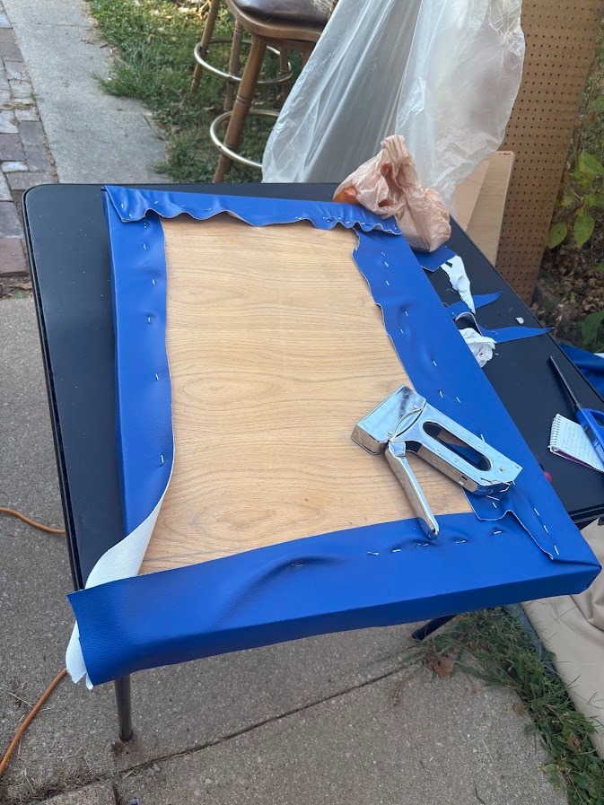
Woodworking & FramingWoodworking & Framing in Progress
Putting together a custom frame with hand tools, measuring tape, and stretch fabric. Making sure every corner is square and solid before anything else goes on. Working with raw wood teaches you that structure is everything: if your base is not level, nothing you build on top of it will hold up.
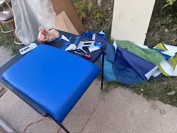
Finished BuildFinished Custom Seat Build
The completed royal blue upholstered seat cushion, built from raw lumber all the way up. Taking a project from rough boards and foam to a clean, comfortable, finished seat is one of the best feelings there is. It is that same satisfaction I get when an application comes together and runs cleanly from end to end.
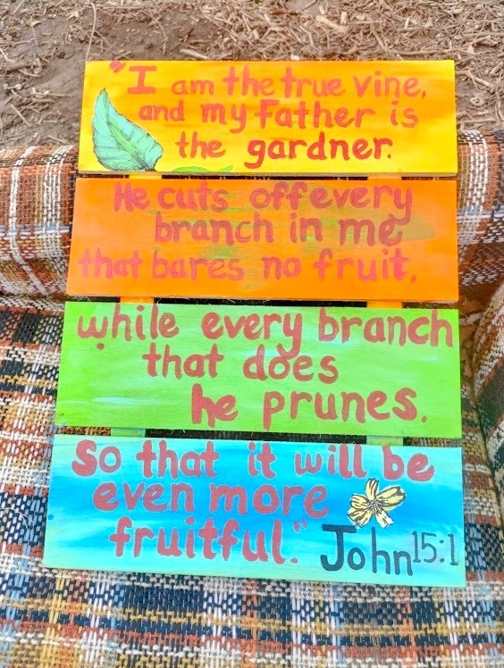
Handcrafted Wood & ArtHandcrafted Painted Wood Sign
Handcrafted wooden slat sign built from individual pine planks, painted with warm color transitions and John 15:1. Combining carpentry with painting, lettering, and botanical leaves. Working on raw wood means sanding down rough grain, priming the surface, and hand-lettering each line so the colors stay vibrant outdoors. It brings together woodworking, painting, and a grounded reminder about growth and pruning.
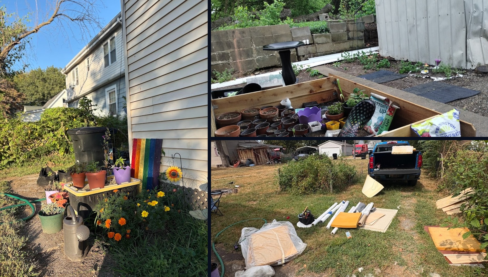
Gardening & Living SoilBackyard Garden & Living Soil
A photo collection of my backyard garden through the season: starting young seedlings in the custom built wooden raised planter bed, tending companion marigolds and herbs with the morning watering can, and harvesting ripe vine tomatoes. Working with living soil teaches patience, daily observation, and consistent maintenance. It is a grounding practice that directly shapes how I build dependable software architectures.
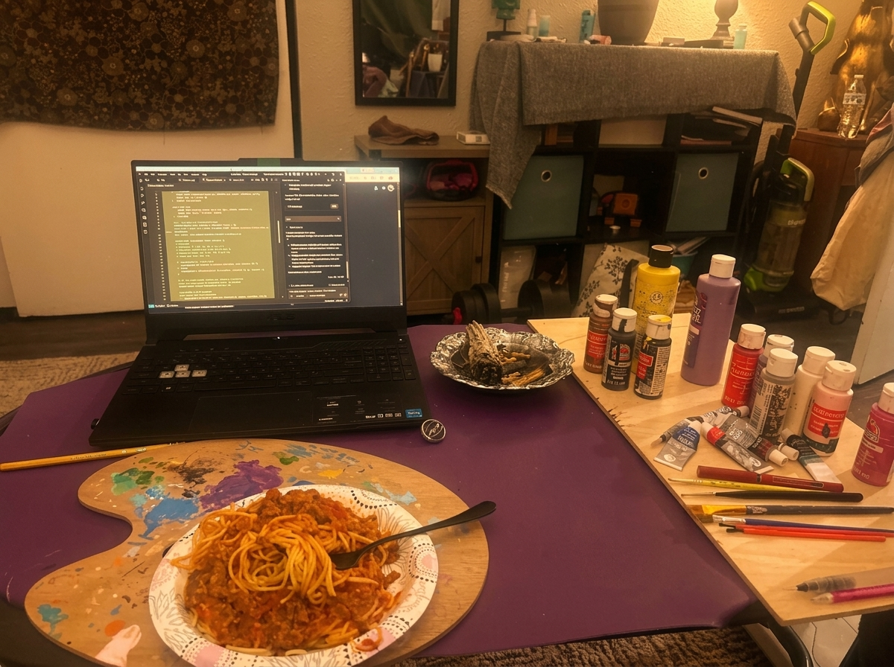
Studio WorkbenchArt Studio & Code Workbench
My everyday workspace where painting and coding happen side by side. On the left is my laptop with the terminal and code editor; on the right are my paints, jars, palette, and brushes. I like having both worlds in one room. Working with visual mediums keeps my mind flexible when I am solving software problems.
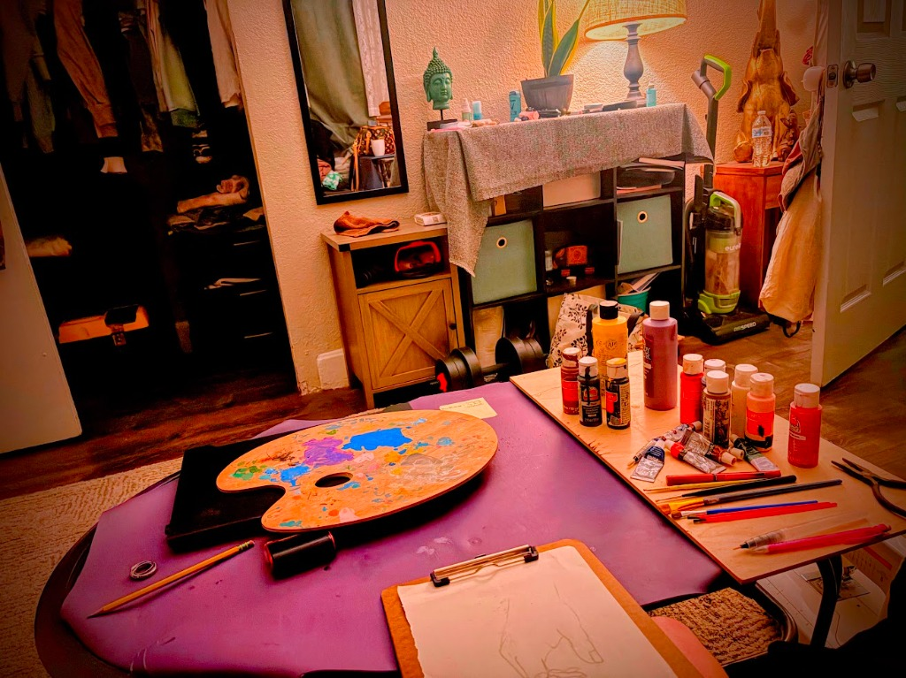
Painting & Color WorkStudio Painting & Color Palette
Mixing paints right on the palette in the studio. Working with physical pigment teaches you about values and layers: you lay down your base tones first, build up midtones, and save high-contrast highlights for last. Whether I am blending colors on canvas or styling clean web layouts, it all comes down to how shapes and tones balance each other out.
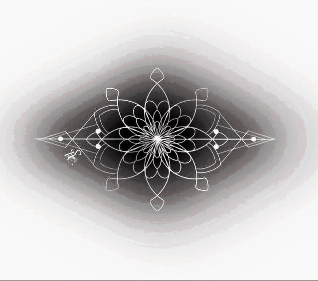
Tattoo Design & Body ArtTattoo Stencil Design & Self-Inking
A geometric mandala stencil designed for a tattoo concept. Every tattoo I have, I actually did myself, on myself. Tattooing your own skin demands steady hands, deep focus, and total commitment to every line you pull. There is no undo button. That same precision, tolerance for difficult detail, and respect for clean execution carries straight into how I debug complex systems and write production software.
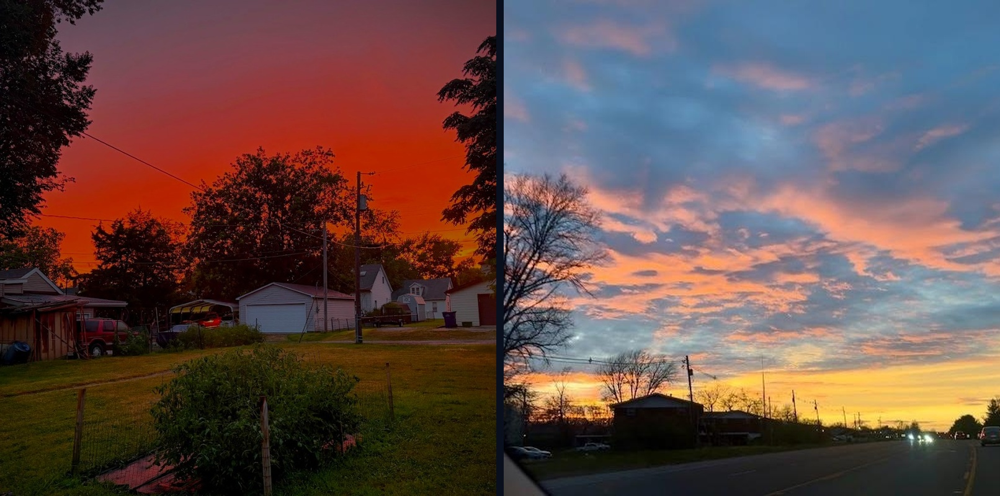
Atmospheric PhotographySt. Louis Twilight & Sunset Skies
A panoramic diptych capturing the atmosphere over Greater St. Louis: a fiery crimson sunset illuminating the backyard garden treeline paired with golden amber and twilight blue cloud layers at dusk. Observing how light and color interact through the sky trains an eye for color temperature, ambient contrast, and balanced gradients, informing my digital UI palettes and interactive canvas visualizers.